폐기물처리기사 (2014-09-20 기출문제)
1과목: 폐기물 개론
1. 밀도가 400kg/m3인 쓰레기 10ton을 압축시켰더니 처음 부피보다 50%가 줄었다. 이 경우 Compactratio는?
- 1.5
- 2.0
- 2.5
- 3.0
(정답률: 87%)

2. 폐기물을 파쇄하여 입도를 분석하였더니 폐기물 입도 분포 곡선상 통과백분율이 10%, 30%, 60%, 90%에 해당되는 입경이 각각 2mm, 4mm, 6mm, 8mm이었다. 곡률계수는?
- 0.93
- 1.13
- 1.33
- 1.53
(정답률: 81%)
3. 압축비가 4인 쓰레기의 부피 감소율은?
- 70%
- 75%
- 80%
- 85%
(정답률: 81%)
4. 폐기물의 수거노선 설정시 고려해야 할 내용으로 옳지 않은 것은?
- 언덕지역에서는 언덕의 꼭대기에서부터 시작하여 적재하면서 차량이 아래로 진행 하도록 한다.
- U자 회전을 피하여 수거한다.
- 아주 많은 양의 쓰레기가 발생되는 발생원은 하루 중 가장 나중에 수거한다.
- 가능한 한 시계방향으로 수거노선을 정한다.
(정답률: 89%)
5. 1일 폐기물 발생량이 1244톤인 도시에서 6톤 트럭(적재가능량)을 이용하여 쓰레기를 매립지까지 운반하려고 한다. 다음과 같은 조건하에서 하루에 필요한 운반트럭의 대수는? (단, 예비차량 포함, 기타조건 고려하지 않음)
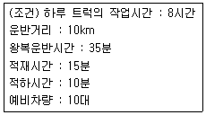
- 25대
- 29대
- 31대
- 36대
(정답률: 75%)
6. 관거(Pipeline)를 이용한 수거방식인 공기수송에 관한 내용으로 틀린 것은?
- 공기수송은 고층주택밀집지역에서 적합하다.
- 공기수송은 소음방지시설을 설치해야 한다.
- 공기수송에 소요되는 동력은 캡슐수송에 소요되는 동력보다 훨씬 적게 소요된다.
- 공기수송 방법 중 가압수송은 진공수송보다 수송 거리를 더 길게 할 수 있다.
(정답률: 72%)
7. 비자성이고 전기전도성이 좋은 물질(동, 알루미늄, 아연)을 다른 물질로부터 분리하는데 가장 적절한 선별 방식은?
- 와전류선별
- 자기선별
- 자장선별
- 정전기선별
(정답률: 88%)
8. 직경이 1.0m인 트롬멜 스크린의 최적 속도는?
- 약 63 rpm
- 약 42 rpm
- 약 19 rpm
- 약 8 rpm
(정답률: 69%)
9. 채취된 쓰레기의 성상분석 절차로 가장 적절한 것은?
- 시료-절단 및 분쇄-건조-물리적 조성-밀도측정-화학적 조성분석
- 시료-절단 및 분쇄-건조-밀도측정-물리적조성-화학적 조성분석
- 시료-밀도측정-건조-절단 및 분쇄-물리적조성-화학적 조성분석
- 시료-밀도측정-물리적조성-건조-절단 및 분쇄-화학적 조성분석
(정답률: 87%)
10. 청소상태를 평가하는 방법 중 서비스를 받는 사람들의 만족도를 설문조사하여 계산하는 '사용자 만족도 지수'의 약자로 옳은 것은?
- USI
- UAI
- CEI
- CDI
(정답률: 86%)
11. 물렁거리는 가벼운 물질로부터 딱딱한 물질을 선별하는데 사용하는 선별분류법으로 경사진 컨베이어를 통해 폐기물을 주입시켜 천천히 회전하는 드럼 위에 떨어뜨려서 분류하는 것은?
- Jigs
- Table
- Secators
- Stoners
(정답률: 78%)
12. 50ton/hr 규모의 시설에서 평균크기가 30.5cm인 혼합된 도시 폐기물을 최종크기 5.1cm로 파쇄하기 위해 필요한 동력은? (단, 평균크기를 15.2cm에서 5.1cm로 파쇄하기 위한 에너지 소모율은 15kW·hr/ton 이며, 킥의 법칙 적용)
- 약 1033 kW
- 약 1156 kW
- 약 1228 kW
- 약 1345 kW
(정답률: 63%)
13. 어느 폐기물의 밀도가 0.45ton/m3이던 것을 압축기로 압축하여 0.75ton/m3로 하였다. 이 때 부피 감소율은?
- 36%
- 40%
- 44%
- 48%
(정답률: 88%)
14. 어느 폐기물의 성분을 조사한 결과 플라스틱의 함량이 10%(중량비)로 나타났다. 이 폐기물의 밀도가 300kg/m3 이라면 폐기물 10m3 중에 함유된 플라스틱의 양은?
- 300 kg
- 400 kg
- 500 kg
- 600 kg
(정답률: 82%)
15. X90=4.6cm로 도시폐기물을 파쇄하고자 할 때 Rosin-Rammler 모델에 의한 특성입자크기 Xo는? (단, n=1로 가정)
- 1.2cm
- 1.6cm
- 2.0cm
- 2.3cm
(정답률: 64%)
16. 어느 도시의 쓰레기 특성을 조사하기 위하여 시료 100kg에 대한 습윤상태의 무게와 함수율을 측정한 결과가 다음과 같을 때 이 시료의 건조중량은?
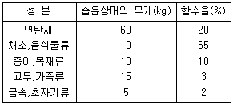
- 70 kg
- 80 kg
- 90 kg
- 100 kg
(정답률: 82%)
17. 어떤 도시에서 폐기물 발생량이 185000톤/년 이였다. 수거 인부는 1일 550명이었으며, 이 도시 인구는 250000명이라고 할 때 1인 1일 폐기물 발생량은? (단, 1년 365일 기준)
- 2.03 kg/인·day
- 2.35 kg/인·day
- 2.45 kg/인·day
- 2.77 kg/인·day
(정답률: 75%)
18. 쓰레기 발생량 조사방법에 관한 설명으로 틀린것은?
- 직접계근법 : 적재차량 계수분석에 비하여 작업량이 많고 번거롭다는 단점이 있다.
- 물질수지법 : 주로 산업폐기물 발생량 추산에 이용한다.
- 물질수지법 : 비용이 많이 들어 특수한 경우에 사용한다.
- 적재차량 계수분석 : 쓰레기의 밀도 또는 압축정도를 정확하게 파악할 수 있다.
(정답률: 70%)
19. 함수율이 97%인 수거분뇨를 55% 함수율의 건조분뇨로 만들면 그 부피는 얼마로 감소하게 되는 가? (단, 비중은 1.0)
- 1/5로 감소
- 1/10로 감소
- 1/15로 감소
- 1/20로 감소
(정답률: 64%)
20. 인구가 300000명인 도시에서 폐기물 발생량이 1.2kg/인·일 이라고 한다. 수거된 폐기물의 밀도가 0.8kg/L, 수거 차량의 적재용량이 12m3라면, 1일 2회 수거하기 위한 수거차량의 대수는? (단, 기타 조건은 고려하지 않음)
- 15대
- 17대
- 19대
- 21대
(정답률: 73%)
2과목: 폐기물 처리 기술
21. 도랑식(trench)으로 밀도가 0.55t/m3 인 폐기물을 매립하려고 한다. 도랑의 깊이가 3m 이고, 다짐에 의해 폐기물을 2/3로 압축시킨다면 도랑 1m2 당 매립할 수 있는 폐기물은 몇 ton 인가? (단, 기타 조건은 고려 안함)
- 2.15
- 2.48
- 3.35
- 3.65
(정답률: 59%)
22. 함수율이 97%, 총 고형물중의 유기물이 80%인 슬러지를 소화조에 500m3/day의 율로 투입하여 유기물의 2/3가 가스화 또는 액화 후 함수율 95%인 소화 슬러지가 얻어졌다고 한다. 소화 슬러지량은? (단, 비중은 1.0을 기준으로 한다.)
- 120 m3/day
- 140 m3/day
- 160 m3/day
- 180 m3/day
(정답률: 65%)
23. 다음 중 악취성 물질인 CH3SH를 나타낸 것은?
- 메틸오닌
- 다이메틸설파이드
- 메틸메르캅탄
- 메틸케톤
(정답률: 76%)
24. 침출수가 점토층을 통과하는데 소요되는 시간을 계산하는 식으로 옳은 것은? (단, t: 통과시간(year), d: 점토층두께(m), h: 침출수 수두(m), K: 투수계수(m/year), n: 유효공극율)
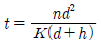
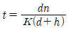
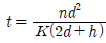
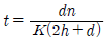
(정답률: 75%)
25. 수거분뇨 1kL를 전처리(SS제거율 30%)하여 발생한 슬러지를 수분함량 80%로 탈수한 슬러지량은? (단, 수거분뇨의 SS농도는 4%, 비중은 1.0 기준)
- 20 kg
- 40 kg
- 60 kg
- 80 kg
(정답률: 52%)
26. 어떤 도시의 폐기물 중 불연성분 70%, 가연성분 30%이고, 이 지역의 폐기물 발생량은 1.4kg/인·일이다. 인구 50000명인 이 지역에서 불연성분 60%, 가연성분 70%를 회수하여 이 중 가연성분으로 RDF를 생산 한다면 RDF의 일일 생산량은?
- 약 15톤
- 약 20톤
- 약 25톤
- 약 30톤
(정답률: 69%)
27. 신도시에 분뇨처리장 투입시설을 설계하려고 한다. 1일 수거 분뇨투입량은 300kL 이고, 수거차 용량이 3,0 kL/대, 수거차 1대의 투입시간은 20분이 소요되며 분뇨처리장 작업시간은 1일 8시간으로 계획하면 분뇨투입구수는? (단, 최대 수거율을 고려하여 안전율을 1.2배로 한다.)
- 2개
- 5개
- 8개
- 13개
(정답률: 80%)
28. 쓰레기의 밀도가 750kg/m3 이며 매립된 쓰레기의 총량은 30000ton이다. 여기에서 유출되는 침출수는 약 몇 m3/년인가? (단, 침출수발생량은 강우량의 60% 이고, 쓰레기의 매립 높이는 6m 이며, 연간 강우량은 1300mm, 기타 조건은 고려하지 않음)
- 2600m3/년
- 3200m3/년
- 4300m3/년
- 5200m3/년
(정답률: 65%)
29. 매립지에 흔히 쓰이는 합성 차수막의 종류인 CR에 관한 내용으로 옳지 않는 것은?
- 대부분의 화학물질에 대한 저항성이 높다.
- 마모 및 기계적 충격에 약하다.
- 접합이 용이하지 못하다.
- 가격이 비싸다.
(정답률: 58%)
30. 매일 평균 200t의 쓰레기를 배출하는 도시가 있다. 매립지의 평균 매립 두께를 5m, 매립밀도를 0.8t/m3로 가정할 때 향후 1년간(1년은 360일로 가정)의 쓰레기 매립을 위한 최소 매립지 면적은? (단, 기타 조건은 고려하지 않음)
- 12000m2
- 15000m2
- 18000m2
- 21000m2
(정답률: 74%)
31. BOD 15000mg/L, Cl- 이 800ppm인 분뇨를 희석하여 활성슬러지법으로 처리한 결과 BOD가 45mg/L, Cl- 이 40ppm 이었다면 활성슬러지법의 처리효율은? (단, 희석수 중에 BOD, Cl- 은 없음)
- 92%
- 94%
- 96%
- 98%
(정답률: 67%)
32. 차수막 재료로서 점토의 조건으로 가장 부적합한 것은?
- 투수계수 10-7cm/sec 미만
- 소성지수 10%이상 30%미만
- 액성한계 10%이상 20%미만
- 자갈함유량 10%미만
(정답률: 63%)
33. 소각장 굴뚝에서 배기가스 중의 염소(Cl2)농도를 측정하였더니 150mL/Sm3 이었다. 이 배기가스 중의 염소(Cl2)농도를 35.5mg/Sm3로 줄이기 위하여 제거해야 할 염소(Cl2) 농도(mL/Sm3)는?
- 약 102
- 약 116
- 약 128
- 약 139
(정답률: 39%)
34. 매립지의 침출수의 농도가 반으로 감소하는데 약 3년이 걸렸다면 이 침출수의 농도가 99% 감소하는데 걸리는 시간은? (단, 1차 반응 기준)
- 약 10년
- 약 15년
- 약 20년
- 약 25년
(정답률: 65%)
35. 연직차수막 시설에 관한 내용 중 틀린 것은?
- 차수막 보강시공이 가능하다.
- 차수막 단위 면적당 공사비는 비싸지만 총공사비로는 싸다.
- 지하수 집배수시설이 필요하다.
- 지하매설로 차수성의 확인이 어렵다.
(정답률: 75%)
36. 퇴비화의 장·단점과 가장 거리가 먼 것은?
- 운영시의 소요되는 에너지가 낮은 장점이 있다.
- 다양한 재료를 이용하므로 퇴비제품의 품질 표준화가 어려운 단점이 있다.
- 퇴비화가 완성되어도 부피가 크게 감소(50% 이하)하지 않는 단점이 있다.
- 생산된 퇴비는 비료가치가 높은 장점이 있다.
(정답률: 83%)
37. 매립지 기체 발생단계를 4단계로 나눌 때 매립 초기의 호기성 단계(혐기성 전단계)에 대한 설명으로 틀린 것은?
- 폐기물내 수분이 많은 경우에는 반응이 가속화된다.
- O2가 대부분 소모된다.
- N2가 급격히 발생한다.
- 주요 생성기체는 CO2이다.
(정답률: 76%)
38. 6.3%의 고형물을 함유한 150000kg의 슬러지를 농축한 후, 농축슬러지를 소화조로 이송할 경우의 농축슬러지의 무게는 70000kg이다. 이때 소화조로 이송한 농축된 슬러지의 고형물 함유율은? (단, 슬러지의 비중은 1.0으로 가정, 상등액의 고형물 함량은 무시한다.)
- 11.5%
- 13.5%
- 15.5%
- 17.5%
(정답률: 83%)
39. 고형폐기물을 매립 처리할 때 C6H12O6 성분 1톤(ton)의 폐기물이 혐기성 분해를 한다면 이론적 메탄가스 발생량은? (단, 표준상태 기준)
- 약 280m3
- 약 370m3
- 약 450m3
- 약 560m3
(정답률: 72%)
40. 총질소 2%인 고형 폐기물 1t을 퇴비화 했더니 총질소는 2.5%가 되고 고형 폐기물의 무게는 0.75t이 되었다. 이 고형 폐기물은 결과적으로 퇴비화 과정에서 질소를 어느 정도 소비하였는가? (단, 기타 조건은 고려하지 않음)
- 1.25kg의 질소 소비
- 3.25kg의 질소 소비
- 5.25kg의 질소 소비
- 7.25kg의 질소 소비
(정답률: 55%)
3과목: 폐기물 소각 및 열회수
41. 유황 함량이 2%인 벙커C유 1.0 ton을 연소시킬 경우 발생되는 SO2의 양은? (단, 황성분 전량이 SO2로 전환됨)
- 30 kg
- 40 kg
- 50 kg
- 60 kg
(정답률: 75%)
42. 열교환기 중 절탄기에 관한 설명으로 틀린 것은?
- 급수예열에 의해 보일러수와의 온도차가 감소하므로 보일러 드럼에 발생하는 열응력이 증가된다.
- 급수온도가 낮을 경우, 굴뚝가스 온도가 저하하면 절탄기 저온부에 접하는 가스온도가 노점에 달하여 절탄기를 부식시키는 것을 주의하여야 한다.
- 보일러 전열면을 통하여 연소가스의 여열로 보일러 급수를 예열하여 보일러 효율을 높이는 장치이다.
- 굴뚝의 가스온도의 저하로 인한 굴뚝 통풍력의 감소를 주의하여야 한다.
(정답률: 71%)
43. 탄소(C) 10 kg을 완전 연소시키는데 필요한 이론적 산소량은?
- 약 7.8 Sm3
- 약 12.6 Sm3
- 약 15.5 Sm3
- 약 18.7 Sm3
(정답률: 68%)
44. 프로판(C3H8)의 고위발열량이 24300 kcal/Sm3이라면 저위발열량(kcal/Sm3)은?
- 22380 kcal/Sm3
- 22840 kcal/Sm3
- 23340 kcal/Sm3
- 23820 kcal/Sm3
(정답률: 65%)
45. 유동층소각로에 대한 설명으로 틀린 것은?
- 가스의 온도가 낮고 과잉공기량이 낮다.
- 연소효율이 높아 미연소분 배출이 적고 따라서 2차 연소실이 불필요하다.
- 로내 온도의 자동제어로 열회수가 용이하다.
- 기계적 구동부분이 많아 고장율이 높다.
(정답률: 75%)
46. 메탄 10 Sm3를 공기과잉계수 1.2로 연소시킬 경우 습윤 연소가스량은?
- 약 82 Sm3
- 약 95 Sm3
- 약 113 Sm3
- 약 124 Sm3
(정답률: 38%)
47. 소각과정에서 Cl2 농도가 0.5%인 배출가스 10000 Sm3/hr를 Ca(OH)2 현탁액으로 세정 처리하여 Cl2를 제거하려 할 때 이론적으로 필요한 Ca(OH)2 양(kg/hr)은? [ 2Cl2 + 2Ca(OH)2 (→) CaCl2+ Ca(OCl)2 + 2H2O ] (단, 원자량 Cl : 35.5, Ca : 40)
- 약 145
- 약 165
- 약 185
- 약 195
(정답률: 63%)
48. RDF(Refuse Drived Fuel)가 갖추어야 하는 조건에 관한 설명으로 가장 거리가 먼 것은?
- 제품의 함수율이 낮아야 한다.
- RDF용 소각로 제작이 용이하도록 발열량이 높지 않아야 한다.
- 원료 중에 비가연성 성분이나 연소 후 잔류하는 재의 양이 적어야 한다.
- 조성 배합률이 균일하여야 하고 대기오염이 적어야 한다.
(정답률: 69%)
49. 다음과 같은 중량조성의 고체연료의 고위발열량(Hh)은? (조건 : C=70%, H=5%, O=15%, S=5%, 기타, Dulong식 기준)
- 약 5400 kcal/kg
- 약 6900 kcal/kg
- 약 7700 kcal/kg
- 약 8400 kcal/kg
(정답률: 78%)
50. 연소 배출 가스량이 5400 Sm3/hr인 소각시설의 굴뚝에서 정압을 측정하였더니 20mmH2O 였다. 여유율 20%인 송풍기를 사용할 경우 필요한 소요 동력은? (단, 송풍기 정압효율 80%, 전동기 효율 70%)
- 약 0.18 kW
- 약 0.32 kW
- 약 0.63 kW
- 약 0.87 kW
(정답률: 59%)
51. 다음 중 착화온도에 관한 설명으로 틀린 것은?(단, 고체연료 기준)
- 분자구조가 간단할수록 착화온도는 낮다.
- 화학적으로 발열량이 클수록 착화온도는 낮다.
- 화학반응성이 클수록 착화온도는 낮다.
- 화학결합의 활성도가 클수록 착화온도는 낮다.
(정답률: 79%)
52. 소각로에 발생하는 질소산화물의 발생억제방법으로 옳지 않은 것은?
- 버너 및 연소실의 구조를 개선한다.
- 배기가스를 재순환한다.
- 예열온도를 높여 연소온도를 상승시킨다.
- 2단 연소시킨다.
(정답률: 68%)
53. 증기터어빈의 분류관점에 따른 터어빈 형식이 잘못 연결된 것은?
- 증기 작동방식 - 충동 터어빈, 반동 터어빈, 혼합식 터어빈
- 흐름수 - 단류 터어빈, 복류 터어빈
- 피구동기(발전용) - 직결형 터어빈, 감속형 터어빈
- 증기 이용방식 - 반경류 터어빈, 축류 터어빈
(정답률: 55%)
54. 소각로의 소각능률이 160 kg/m2 · hr이며 1일 처리하는 쓰레기의 양이 15000kg이다. 1일 7시간 소각하면 로스톨의 면적은?
- 7.4 m2
- 8.2 m2
- 11.7 m2
- 13.4 m2
(정답률: 62%)
55. 어느 폐기물 소각처리 시 회분의 중량이 폐기물의 15%라고 한다. 이 때 회분의 밀도가 2g/cm3이고 처리해야 할 폐기물이 40000 kg 이라면 소각 후 남게 되는 재의 이론체적은?
- 2.0 m3
- 3.0 m3
- 4.0 m3
- 5.0 m3
(정답률: 68%)
56. 저발열량이 9,000 kcal/Sm3 인 기체연료를 연소할 때 이론습연소가스량은 25 Sm3/Sm3이고, 이론연소온도는 2000℃ 이었다. 이 때 연소가스의 평균정압비열은? (단, 연소용 공기, 연료 온도는 15℃ 이다.)
- 0.12 kcal/Sm3·℃
- 0.18 kcal/Sm3·℃
- 0.24 kcal/Sm3·℃
- 0.35 kcal/Sm3·℃
(정답률: 67%)
57. 배가가스성분을 검사해보니 O2량이 5.25%(부피기준)였다. 완전연소로 가정한다면 공기비는? (단, N2는 79%)
- 1.33
- 1.54
- 1.84
- 1.94
(정답률: 70%)
58. 이소프로필알콜(C3H7OH) 5kg이 완전연소하는데 필요한 이론공기량은? (단, 표준상태 기준)
- 20 Sm3
- 30 Sm3
- 40 Sm3
- 50 Sm3
(정답률: 60%)
59. 폐지 250kg을 소각하고자 한다. 이론공기량(Sm3)은? (단, 폐지의 성분은 모두 셀룰로오스(C6H10O5)로 가정함)
- 약 690
- 약 790
- 약 890
- 약 990
(정답률: 58%)
60. C10H17O6N인 활성슬러지 폐기물을 소각처리하려고 한다. 폐기물 5kg당 필요한 이론적 공기의 무게는? (단, 공기 중 산소량은 중량비로 23%)
- 약 12 kg
- 약 22 kg
- 약 32 kg
- 약 42 kg
(정답률: 57%)
4과목: 폐기물 공정시험기준(방법)
61. 대상폐기물의 양이 1100톤인 경우 시료의 최소 수는?
- 40
- 50
- 60
- 70
(정답률: 77%)
62. 시료의 용출시험방법에 관한 설명으로 옳은 것은? (단, 상온, 상압 기준)
- 용출조작은 진폭이 4~5cm인 진탕기로 200회/min로 6시간 연속 진탕한다.
- 용출조작은 진폭이 4~5cm인 진탕기로 200회/min로 8시간 연속 진탕한다.
- 용출조작은 진폭이 4~5cm인 진탕기로 300회/min로 6시간 연속 진탕한다.
- 용출조작은 진폭이 4~5cm인 진탕기로 300회/min로 8시간 연속 진탕한다.
(정답률: 73%)
63. 액상폐기물 중 PCBs를 기체크로마토그래피로 분석시 사용되는 시약이 아닌 것은?
- 수산화칼슘
- 무수황산나트륨
- 실리카겔
- 노말 헥산
(정답률: 65%)
64. 다음 시료의 전처리(산분해법)방법 중 유기물 등을 많이 함유하고 있는 대부분의 시료에 적용하는 것은?
- 질산-염산 분해법
- 질산-황산 분해법
- 염산-황산 분해법
- 염산-과염소산 분해법
(정답률: 78%)
65. 폐기물시료의 강열감량을 측정한 결과 다음과 같은 자료를 얻었다. 해당시료의 강열감량은? (단, 도가니의 무게(W1): 51.045g, 탄화전 도가니와 시료의 무게(W2): 92.345g, 탄화후 도가니와 시료의 무게(W3): 53.125g)
- 93%
- 95%
- 97%
- 99%
(정답률: 78%)
66. 원자흡수분광광도법에 의한 구리(Cu) 시험방법으로 옳은 것은?
- 정량범위는 440nm에서 0.2~4mg/L 범위 정도이다.
- 정밀도는 측정값의 상대표준편차(RSD)로 산출하며 측정한 결과 ±25% 이내이어야 한다.
- 검정곡선의 결정계수(R2)는 0.999 이상이어야 한다.
- 표준편차율은 표준물질의 농도에 대한 측정 평균값의 상대 백분율로서 나타내며 5~15% 범위이다.
(정답률: 62%)
67. 다음에 설명한 시료 축소 방법은?
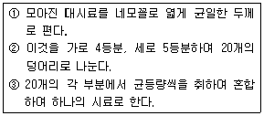
- 구획법
- 등분법
- 균등법
- 분할법
(정답률: 79%)
68. 시안 측정을 위한 이온전극법을 적용시 내부정도관리 주기 기준에 관한 설명으로 옳은 것은?
- 방법검출한계, 정량한계, 정밀도 및 정확도는 2월 1회 이상 산정하는 것을 원칙으로 한다.
- 방법검출한계, 정량한계, 정밀도 및 분기 1회 이상 산정하는 것을 원칙으로 한다.
- 방법검출한계, 정량한계, 정밀도 및 정확도는 반기 1회 이상 산정하는 것을 원칙으로 한다.
- 방법검출한계, 정량한계, 정밀도 및 정확도는 연1회 이상 산정하는 것을 원칙으로 한다.
(정답률: 67%)
69. 자외선/가시선 분광법을 적용한 시안화합물 측정에 관한 내용으로 틀린 것은?
- 시안화합물을 측정할 때 방해물질들은 증류하면 대부분 제거된다.
- 황화합물이 함유된 시료는 아세트산용액을 넣어 제거한다.
- 잔류염소가 함유된 시료는 L-아스코빈산 용액을 넣어 제거한다.
- 잔류염소가 함유된 시료는 이산화비소산나트륨 용액을 넣어 제거한다.
(정답률: 60%)
70. 다음은 용출시험방법에 관한 내용이다. ( )안에 옳은 내용은?
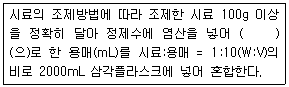
- pH 4 이하
- pH 4.3~5.8
- pH 5.8~6.3
- pH 6.3~7.2
(정답률: 89%)
71. 비소를 자외선/가시선 분광법으로 측정할 때에 대한 내용으로 틀린 것은?
- 정량한계는 0.002mg 이다.
- 적자색의 흡광도를 530nm에서 측정한다.
- 정량범위는 0.002~0.01 mg 이다.
- 시료 중의 비소를 아연을 넣어 3가 비소로 환원시킨다.
(정답률: 67%)
72. 용액의 농도를 %로만 표현하였을 경우를 옳게 나타낸 것은? (단, W: 무게, V: 부피)
- V/V%
- W/W%
- V/W%
- W/V%
(정답률: 65%)
73. 폐기물공정시험기준의 총칙에서 규정하고 있는 사항 중 옳은 내용은?
- '약' 이라 함은 기재된 양에 대하여 15% 이상의 차가 있어서는 안 된다.
- '정밀히 단다' 라 함은 규정된 양의 시료를 취하여 화학저울 또는 미량저울로 칭량함을 말한다.
- '정확히 취하여' 라 하는 것은 규정한 양의 액체를 메스플라스크로 눈금까지 취하는 것을 말한다.
- '정량적으로 씻는다' 라 함은 사용된 용기 등에 남은 대상성분을 수돗물로 씻어냄을 말한다.
(정답률: 84%)
74. 유도결합플라스마-원자발광분광법을 사용한 금속류 측정에 관한 내용으로 틀린 것은?
- 대부분의 간섭물질은 산 분해에 의해 제거된다.
- 유도결합플라스마-원자발광분광기는 시료도입부, 고주파전원부, 광원부, 분광부, 연산처리부 및 기록부로 구성된다.
- 시료 중에 칼슘과 마그네슘의 농도가 높고 측정값이 규제값의 90% 이상일 때는 희석 측정하여야 한다.
- 유도결합플라스마-원자발광분광기의 분광부는 검출 및 측정에 따라 연속주사형 단원소측정장치와 다원소동시 측정장치로 구분된다.
(정답률: 53%)
75. 기체크로마토그래피로 유기인을 분석할 때 시료 관리에 관한 내용으로 옳은 것은?
- 모든 시료는 시료채취 후 추출하기 전까지 4℃ 냉암소에서 보관하고 5일 이내에 추출하고 30일 이내에 분석한다.
- 모든 시료는 시료채취 후 추출하기 전까지 4℃ 냉암소에서 보관하고 5일 이내에 추출하고 40일 이내에 분석한다.
- 모든 시료는 시료채취 후 추출하기 전까지 4℃ 냉암소에서 보관하고 7일 이내에 추출하고 30일 이내에 분석한다.
- 모든 시료는 시료채취 후 추출하기 전까지 4℃ 냉암소에서 보관하고 7일 이내에 추출하고 40일 이내에 분석한다.
(정답률: 54%)
76. 다음은 정량한계에 관한 내용이다. ( )안에 옳은 내용은?
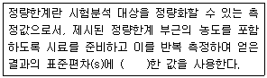
- 3배
- 3.3배
- 5배
- 10배
(정답률: 85%)
77. 폐기물공정시험기준에서 규정하고 있는 온도에 대한 설명으로 틀린 것은?
- 실온 1~35℃
- 온수 60~70℃
- 열수 약 100℃
- 냉수 4℃ 이하
(정답률: 79%)
78. 다음은 회분식 연소방식의 소각재 반출설비에서의 시료채취에 관한 내용이다. ( )안에 옳은 내용은?
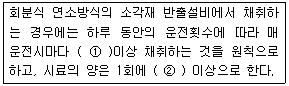
- ① 2회 ② 100g
- ① 4회 ② 100g
- ① 2회 ② 500g
- ① 4회 ② 500g
(정답률: 68%)
79. 다음은 용출시험방법의 적용에 관한 사항이다. ( )안에 옳은 내용은?
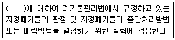
- 수거 폐기물
- 고상 폐기물
- 고상 및 반고상 폐기물
- 일반 폐기물
(정답률: 63%)
80. 시료 채취를 위한 용기사용에 관한 설명으로 틀린 것은?
- 시료용기는 무색경질의 유리병 또는 폴리에틸렌병, 폴리에틸렌백을 사용한다.
- 시료 중에 다른 물질의 혼입이나 성분의 손실을 방지하기 위하여 밀봉할 수 있는 마개를 사용하며 코르크 마개를 사용하여서는 안 된다. 다만 고무나코르크 마개에 파라핀지, 유지 또는 셀로판지를 씌워 사용할 수도 있다.
- 시안, 수은 등 휘발성 성분의 실험을 위한 시료의 채취 시는 무색경질의 유리병을 사용하여야 한다.
- 채취용기는 시료를 변질시키거나 흡착하지 않는 것이어야 하며 기밀하고 누수나 흡습성이 없어야 한다.
(정답률: 77%)
5과목: 폐기물 관계 법규
81. 생활폐기물 수집 · 운반 대행자에 대한 대행실적 평가 실시 기준으로 옳은 것은?
- 분기에 1회 이상
- 반기에 1회 이상
- 매년 1회 이상
- 2년간 1회 이상
(정답률: 67%)
82. 음식물류 폐기물 배출자는 음식물류 폐기물의 발생억제 및 처리계획을 환경부령으로 정하는 바에 따라 특별 자치시장, 특별자치도지사, 시장, 군수, 구청장에게 신고하여야 한다. 이를 위반하여 음식물류 폐기물의 발생 억제 및 처리계획을 신고하지 아니한 자에 대한 과태료 부과 기준은?
- 100만원 이하
- 300만원 이하
- 500만원 이하
- 1000만원 이하
(정답률: 74%)
83. 동물성 잔재물(殘滓物)과 의료폐기물 중 조직물류폐기물 등 부패나 변질의 우려가 있는 폐기물인 경우 처리명령 대상이 되는 조업중단 기간은?
- 5일
- 10일
- 15일
- 30일
(정답률: 85%)
84. 폐기물관리종합계획에 포함되어야 하는 사항과 가장 거리가 먼 것은?
- 재원 조달 계획
- 폐기물 관리 여건 및 전망
- 부분별 폐기물 관리 현황
- 종전의 종합계획에 대한 평가
(정답률: 47%)
85. 한국폐기물협회의 수행 업무와 가장 거리가 먼것은? (단, 그 밖의 정관에서 정하는 업무는 제외)
- 폐기물처리 절차 및 이행 업무
- 폐기물 관련 홍보 및 교육 · 연수
- 폐기물 관련 국제교류 및 협력
- 폐기물과 관련된 업무로서 국가나 지방자치단체로부터 위탁받은 업무
(정답률: 66%)
86. 멸균분쇄시설의 검사기관으로 옳지 않은 것은?
- 한국건설기술연구원
- 한국산업기술시험원
- 한국환경공단
- 보건환경연구원
(정답률: 83%)
87. 폐기물 처리시설 중 화학적 처분시설(중간처분시설)에 해당되지 않는 것은?
- 응집·침전시설
- 고형화·고화·안정화 시설
- 반응시설(중화·산화·환원·중합·축합·치환 등의 화학 반응을 이용하여 폐기물을 처분하는 단위시설을 포함한다)
- 흡착·정제시설
(정답률: 68%)
88. 폐기물처리시설 주변 지역 영향조사 기준 중 토양조사 지점에 관한 기준으로 옳은 것은?
- 매립시설에 인접하여 토양오염이 우려되는 2개소 이상의 일정한 곳으로 한다.
- 매립시설에 인접하여 토양오염이 우려되는 3개소 이상의 일정한 곳으로 한다.
- 매립시설에 인접하여 토양오염이 우려되는 4개소 이상의 일정한 곳으로 한다.
- 매립시설에 인접하여 토양오염이 우려되는 5개소 이상의 일정한 곳으로 한다.
(정답률: 78%)
89. 폐기물처리업의 업종 구분과 영업 내용의 범위를 벗어나는 영업을 한 자에 대한 벌칙기준으로 옳은 것은?
- 1년 이하의 징역이나 5백만원 이하의 벌금
- 1년 이하의 징역이나 1천만원 이하의 벌금
- 2년 이하의 징역이나 2천만원 이하의 벌금
- 3년 이하의 징역이나 2천만원 이하의 벌금
(정답률: 88%)
90. 폐기물 처리시설인 재활용시설 중 기계적 재활용시설의 기준으로 옳지 않은 것은?
- 절단시설(동력 10마력 이상인 시설로 한정한다)
- 탈수·건조 시설(동력 10마력 이상인 시설로 한정한다)
- 압축, 압출, 성형, 주조시설(동력 10마력 이상인 시설로 한정한다)
- 파쇄, 분쇄, 탈피 시설(동력 20마력 이상인 시설로 한정한다)
(정답률: 55%)
91. 폐기물 처분시설 중 관리형 매립시설에서 발생하는 침출수의 배출허용기준 중 '나 지역'의 생물화학적 산소요구량의 기준은?
- 60mg/L 이하
- 70mg/L 이하
- 80mg/L 이하
- 90mg/L 이하
(정답률: 73%)
92. 재활용에 해당되는 활동에는 폐기물로부터 에너지를 회수하거나 회수할 수 있는 상태로 만들거나 폐기물을 연료로 사용하는 환경부령으로 정하는 활동이 있으며 그 중 폐기물(지정폐기물 제외)을 시멘트 소성로 및 환경부 장관이 고시하는 시설에서 연료로 사용 하는 활동이 있다. 다음 중 시멘트 소성로 및 환경부 장관이 정하여 고시하는 시설에서 연료로 사용하는 폐기물(지정 폐기물 제외)과 가장 거리가 먼 것은? (단, 그 밖에 환경부장관이 고시하는 폐기물 제외)
- 폐타이어
- 폐유
- 폐섬유
- 폐합성고무
(정답률: 81%)
93. 폐기물처분시설의 검사항목기준으로 거리가 먼것은? (단, “멸균분쇄시설”의 “정기검사”)
- 멸균조건의 적절유지 여부(멸균검사 포함)
- 분쇄시설의 작동상태
- 폭발사고와 화재 등에 대비한 구조의 적절유지
- 자동투입장치 및 계측장비의 작동상태
(정답률: 65%)
94. 다음은 최종처분시설 중 관리형 매립시설의 관리기준에 관한 내용이다. ( )안에 옳은 내용은?
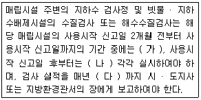
- 가: 월 1회 이상, 나: 분기 1회 이상, 다: 1월말
- 가: 월 1회 이상, 나: 분기 1회 이상, 다: 12월말
- 가: 월 2회 이상, 나: 분기 1회 이상, 다: 1월말
- 가: 월 2회 이상, 나: 분기 1회 이상, 다: 12월말
(정답률: 74%)
95. 다음 의료폐기물의 종류 중 위해의료폐기물에 해당되지 않는 것은?
- 시험 · 검사 등에 사용된 배양액
- 파손된 유리재질의 시험기구
- 인체 또는 동물의 조직 · 장기 · 기관 · 신체의 일부
- 혈액 · 체액 · 분비물 · 배설물이 함유되어 있는 탈지면
(정답률: 60%)
96. 폐기물중간재활용업, 폐기물최종재활용업 및 폐기물 종합재활용업의 변경허가를 받아야 하는 중요사항으로 옳지 않은 것은?
- 운반차량(임시차량 포함)의 증차
- 폐기물 재활용시설의 신설
- 허가 또는 변경허가를 받은 재활용 용량의 100분의 30이상(금속을 회수하는 최종재활용업 또는 종합재활용업의 경우에는 100분의 50이상)의 변경(허가 또는 변경 허가를 받은 후 변경되는 누계를 말한다)
- 폐기물 재활용시설 소재지의 변경
(정답률: 79%)
97. 폐기물 처리업자의 폐기물보관량 및 처리기한에 관한 기준으로 옳은 것은? (단, 폐기물 수집, 운반업자가 임시보관장소에 폐기물을 보관하는 경우)
- 의료 폐기물 외의 폐기물 : 중량 450톤 이하이고 용적이 300세제곱미터 이하, 3일 이내
- 의료 폐기물 외의 폐기물 : 중량 350톤 이하이고 용적이 200세제곱미터 이하, 3일 이내
- 의료 폐기물 외의 폐기물 : 중량 450톤 이하이고 용적이 300세제곱미터 이하, 5일 이내
- 의료 폐기물 외의 폐기물 : 중량 350톤 이하이고 용적이 200세제곱미터 이하, 5일 이내
(정답률: 65%)
98. 설치신고대상 폐기물처리시설 기준으로 옳지 않은 것은?
- 일반소각시설로서 1일 처분능력이 100톤(지정폐기물의 경우에는 10톤)미만인 시설
- 생물학적 처분시설로서 1일 처분능력이 100톤 미만인 시설
- 소각열회수시설로서 시간당 재활용능력이 100킬로그램 미만인 시설
- 기계적 처분시설 또는 재활용시설 중 탈수·건조시설, 멸균분쇄시설 및 화학적 처분시설 또는 재활용시설
(정답률: 45%)
99. 의료폐기물 전용용기 검사기관으로 옳은 것은?
- 한국화학융합시험연구원
- 한국건설환경기술시험원
- 한국의료기기시험연구원
- 한국건설환경시험연구원
(정답률: 60%)
100. 다음 중 폐기물 감량화 시설의 종류에 해당되지 않는 것은?
- 폐기물 재활용시설
- 폐기물 소각시설
- 공정 개선시설
- 폐기물 재이용시설
(정답률: 80%)
10,000 kg / 400 kg/m^3 = 25 m^3
압축 후의 부피는 초기 부피의 50% 감소한 값이므로 다음과 같습니다.
25 m^3 * 0.5 = 12.5 m^3
압축 후의 밀도는 다음과 같습니다.
10,000 kg / 12.5 m^3 = 800 kg/m^3
Compactratio는 압축 후의 밀도를 초기 밀도로 나눈 값이므로 다음과 같습니다.
800 kg/m^3 / 400 kg/m^3 = 2.0
따라서, 정답은 "2.0" 입니다.